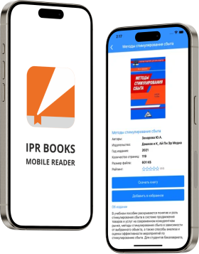

Мобильное приложение IPR SMART Mobile Reader
Мобильное приложение IPR SMART Mobile Reader обеспечивает пользователям ЭБС IPR SMART удобную и эффективную работу с контентом библиотеки на смартфоне или планшете. Приложение работает на операционных системах IOS и Android.

Функциональные возможности IPR SMART Mobile Reader:
- Полный доступ к каталогу книг и периодике в рамках подписки организации
- Умный поиск и фильтрация контента
- Удобная работа с изданиями: просмотр оглавления, добавление и удаление закладок, быстрый переход к нужной главе и закладке, работа с цитатами, поиск по тексту издания
- Навигация: автоповорот, вертикальная и горизонтальная ориентация, постраничная навигация, прокрутка страниц, отображение двух страниц
- Настройка режима чтения: ночной и дневной режимы, ручная и автонастройка яркости
Десятки тысяч пользователей работают с нашим мобильным приложением и оценили его удобство!
Бесплатно
в App Store
Бесплатно
в Google play
Рейтинг в магазинах приложений Google play и App Store
Для использования IPR SMART Mobile Reader пользователю достаточно скачать приложение и ввести свой логин и пароль. Приложение синхронизируется на всех устройствах с сохранением закладок, цитат и заметок.